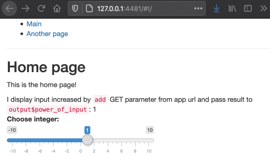

basics.RmdIn this tutorial we will walk you through the basics of routing with the shiny.router library.
In a web application, routing is the process of using URLs to drive the user interface. Routing adds more possibilities and flexibility while building a complex and advanced web application, offering dividing app into separated sections.
Let’s build together a simple app that has two subpages and captures the data from url parameters.
We start by importing the packages.
Next, we create the content of our subpages: “home” and “another”.
home_page <- div( titlePanel("Home page"), p("This is the home page!"), uiOutput("power_of_input") ) another_page <- div( titlePanel("Another page"), p("This is the another page!"), )
Now we can create routing. We provide routing paths, a UI of the page and (optionally) server-side callback for each page (here: NA).
router <- make_router( route("/", home_page, NA), route("another", another_page, NA) )
Optionally, we can create a menu to easier navigate on our webapp:
menu <- tags$ul( tags$li(a(class = "item", href = route_link("/"), "Main")), tags$li(a(class = "item", href = route_link("another"), "Another page")), )
Now, we create an output for our router in main UI of Shiny app. We also add sliderInput to test its functionality.
ui <- fluidPage( menu, tags$hr(), router$ui, shiny::sliderInput("int", "Choose integer:", -10, 10, 1, 1), )
Then, we plug router into Shiny server (note: router$server at the beginning).
server <- function(input, output, session) { router$server(input, output, session) }
In theory that would be it, but additionally we can also introduce the mechanism of catching the parameters from the URL. We will use get_query_param function. Our modified Server code may look like this:
server <- function(input, output, session) { router$server(input, output, session) component <- reactive({ if (is.null(get_query_param()$add)) { return(0) } as.numeric(get_query_param()$add) }) output$power_of_input <- renderUI({ HTML(paste( "I display input increased by <code>add</code> GET parameter from app url and pass result to <code>output$power_of_input</code>: ", as.numeric(input$int) + component())) }) }
It’s time to run it.
shinyApp(ui, server)
Here you can see the final result:

Feel free to copy the code of this example and test it on your own!